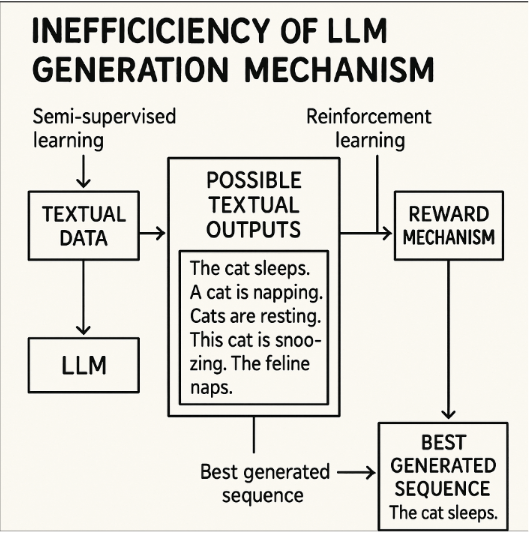

Yann LeCun, Chief AI Scientist di Meta e pioniere del Deep Learning, offre una prospettiva critica sull'attuale traiettoria dell'Intelligenza Artificiale. Egli sottolinea la grave inefficienza degli LLM rispetto all'apprendimento umano: i modelli più grandi e avanzati oggi esistenti sono stati addestrati su enormi quantità di testo che, misurate in termini di byte, equivalgono appena alle informazioni elaborate dal cervello di un bambino nei suoi primi 4 anni di vita.

Il pensiero di LeCun è netto: gli attuali Large Language Models sono limitati dal loro design. Anche scalando le loro dimensioni o aumentando esponenzialmente i dati di addestramento, non raggiungeranno mai l'AGI (Artificial General Intelligence), in quanto mancano di comprensione profonda del mondo fisico, ragionamento logico e memoria persistente.